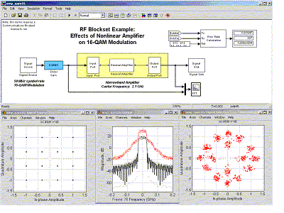

The RF Blockset is a collection of behavioral blocks for design, analysis, and simulation of RF components and systems. It provides rich capabilities for modeling and analyzing RF systems in the time domain by using a solid simulation technique: baseband equivalent behavioral modeling of RF components. In comparison to traditional circuit simulation tools, the RF Blockset executes very rapidly by sampling signals in proportion to the symbol rate, not the carrier rate. The RF Blockset offers a wide variety of RF component blocks like ladder filters, transmission lines, black box elements, amplifiers and mixers, and enables you to assemble RF subsystems rapidly and efficiently. The RF Blockset brings the full power of Simulink® model-based design to RF circuits and systems.